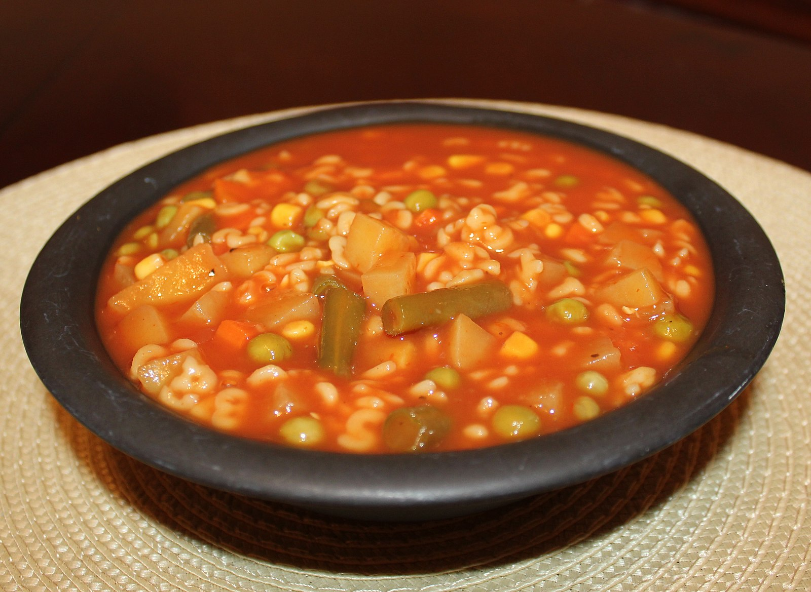

This recipe was found in allrecipes.com, made by Mrs.Mcevers. The information is found on https://www.allrecipes.com/recipe/53493/alphabet-soup/

Photo by: Thriving Vegetarian, CC-BY-2.0 https://creativecommons.org/licenses/by/2.0/deed.en, Original image found in https://www.flickr.com/photos/90155432@N02/8485898599/. Information was obtained from Wikimedia Commons through this link: https://commons.wikimedia.org/wiki/File:Alphabet_Soup.jpg.
Ingredients
1 pound ground round
3 cubes beef bouillon
3 cups hot water
1 (46 fluid ounce) bottle spicy vegetable juice cocktail
1 pound frozen mixed vegetables, thawed
8 ounces uncooked alphabet pasta
6 cups water
salt and pepper to taste
Conversion
Rate this Recipe
Directions
Place the meat in a large stock pot, and cook over medium-high heat until evenly brown. Drain the meat, except for about 2 tablespoons of the juices.
Dissolve the bouillon cubes in 3 cups of hot water, and add to the stock pot with the meat. Stir in spicy vegetable juice cocktail, mixed vegetables, alphabet pasta, and 6 cups of water. Simmer 20 minutes, or until pasta is tender. Season to taste with salt and pepper, and serve.